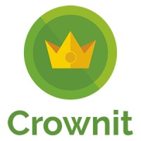

Rishabh Lashkari
Team Lead
7+ years of experience in scaling mobile products for unicorn startups along with comprehensive individual contributions to the developer community. Recognised for consistency in timely delivery while maintaining the code quality and standards. Complete understanding of mobile development cycles along with the knowledge of backed infrastructures ensuring end-to-end development of projects.
WORK EXPERIENCE

Crownit
07/2018 - 08/2022
- Working in a busy environment providing clients with suitable solutions for their development requirements and closing deals.
- Building rapport with customers to ensure all their needs are met, worked with clients like Nestle, Loreal, Lakme, ITC, Hershey’s, P&G, and many more.
- Accomplishing deadlines and achieving good customer feedback.
- I was given the tag “MR. Dependable” in July 2020, in appreciation of my constant performance and dedication towards the company.
Skilrock
03/2016 - 06/2018
- Think through hard problems and work with amazing people to make the solutions a reality.
- Creating complex, enterprise-transforming applications on diverse, high-energy teams using the latest tools and techniques.
- Hands-on coding, usually in a pair programming environment. Working in highly collaborative teams and building quality code. Working in lots of different domains and client environments.
- Understanding the business domain deeply and working closely with business stakeholders.
- Hands-on experience in the design, coding, and implementation of complex, custom-built applications. Using OO skills, including strong design patterns knowledge.
- Experience working with Agile Methodologies, such as Extreme Programming (XP) and Scrum.
- Knowledge of software best practices, like Test-Driven Development (TDD) and Continuous Integration.